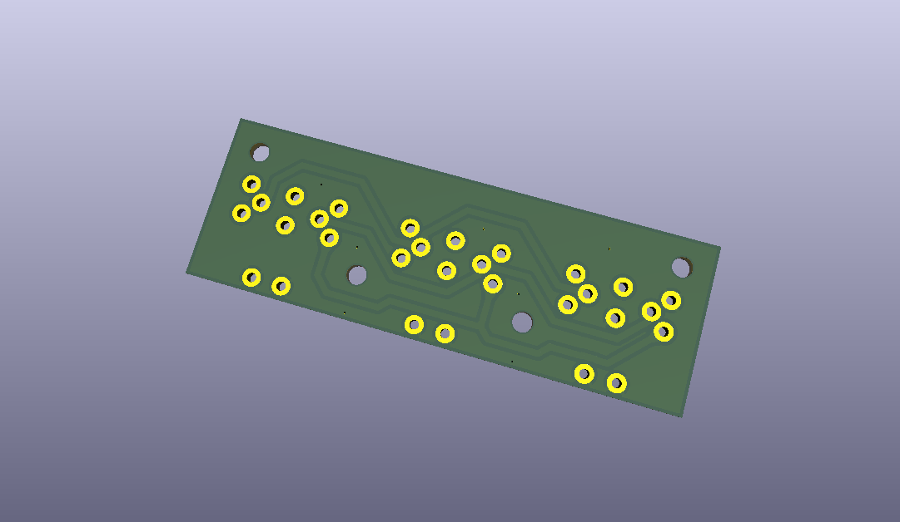
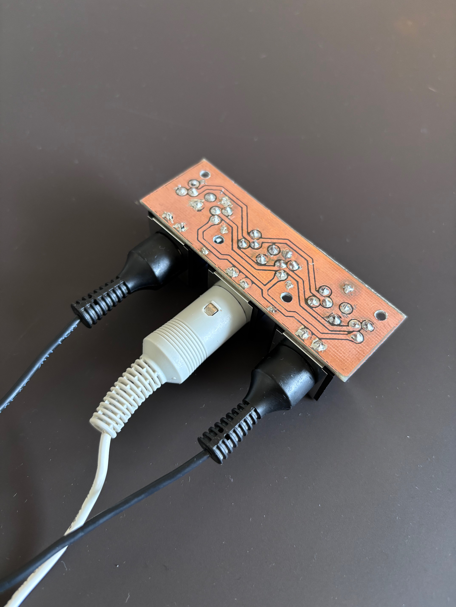
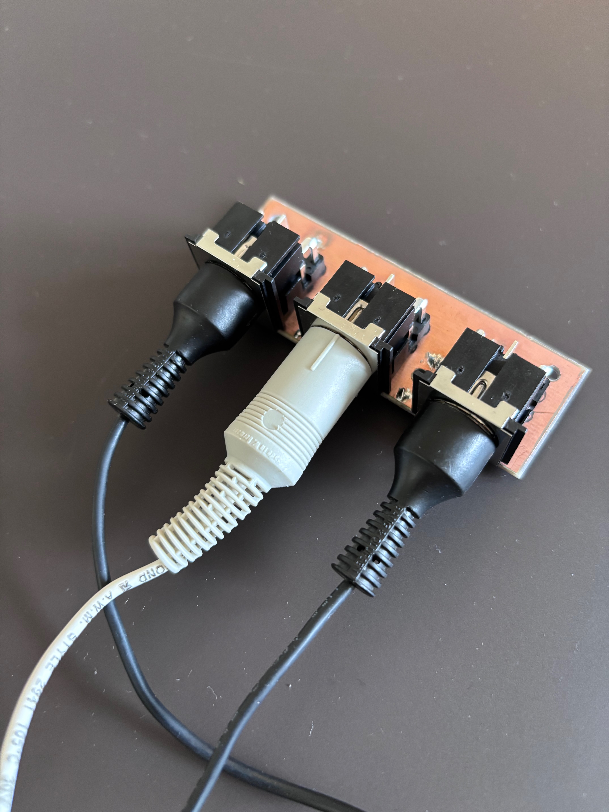
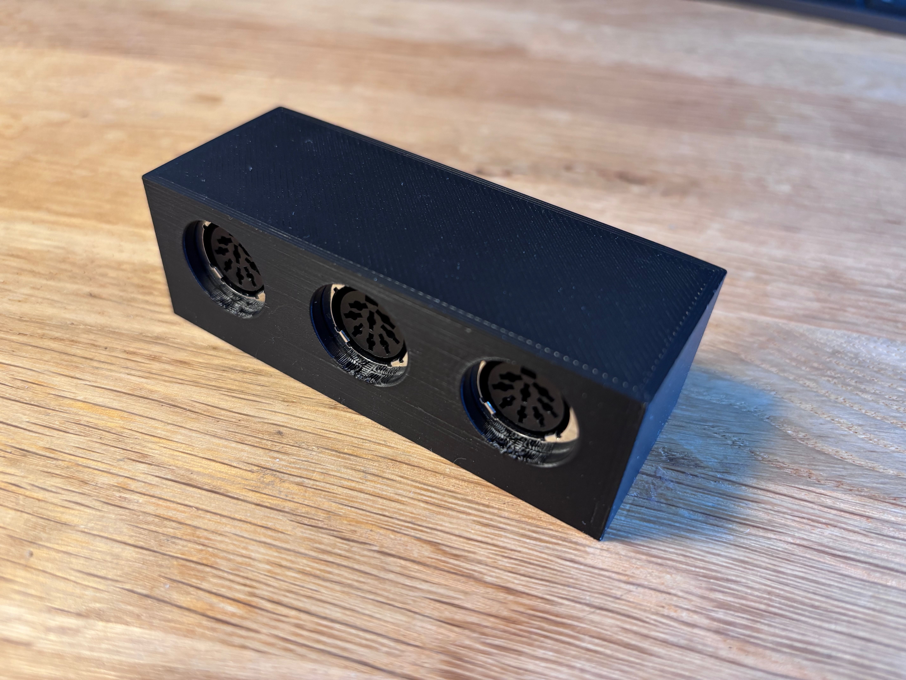
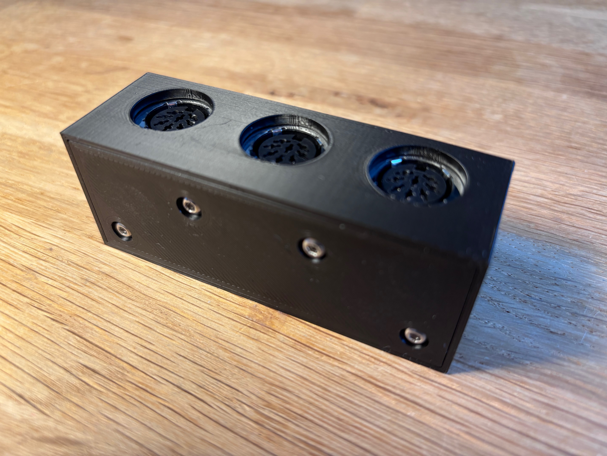

One Cable, Two Speakers
PowerLink is Bang & Olufsen's connector standard for active speakers: a single 8-pin DIN cable carrying left and right audio, a data line, and the control signal that wakes the speakers from standby. Because both channels travel down the same cable, a Beosound 9000 can feed two Beolab 8000s from one run — provided something splits it at the far end. This is a small hand-etched board that does exactly that: one input socket, two outputs, each speaker switched internally to left or right. The result is a single cable leaving the Beosound 9000 instead of two. The board was laid out in KiCad and etched at home in sodium persulfate.




